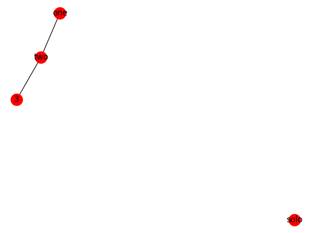

Note
Click here to download the full example code
Rgraph¶
An example showing how to use the JavaScript InfoVis Toolkit (JIT) JSON export
See the JIT documentation and examples at http://thejit.org
Out:
[
{
"data": {},
"id": "solo",
"name": "solo"
},
{
"adjacencies": [
{
"nodeTo": "two",
"data": {
"type": "extra special"
}
}
],
"data": {},
"id": 3,
"name": 3
},
{
"adjacencies": [
{
"nodeTo": 3,
"data": {
"type": "extra special"
}
},
{
"nodeTo": "one",
"data": {}
}
],
"data": {
"type": "special"
},
"id": "two",
"name": "two"
},
{
"adjacencies": [
{
"nodeTo": "two",
"data": {}
}
],
"data": {
"type": "normal"
},
"id": "one",
"name": "one"
}
]
Nodes: [(u'solo', {}), (3, {}), (u'two', {u'type': u'special'}), (u'one', {u'type': u'normal'})]
Edges: [(3, u'two', {u'type': u'extra special'}), (u'two', u'one', {})]
__author__ = """Ollie Glass (ollieglaskovik@gmail.com)"""
import json
import matplotlib.pyplot as plt
import networkx as nx
from networkx.readwrite.json_graph import jit_data, jit_graph
# add some nodes to a graph
G = nx.Graph()
G.add_node("one", type="normal")
G.add_node("two", type="special")
G.add_node("solo")
# add edges
G.add_edge("one", "two")
G.add_edge("two", 3, type="extra special")
# convert to JIT JSON
jit_json = jit_data(G, indent=4)
print(jit_json)
X = jit_graph(json.loads(jit_json))
print("Nodes: %s" % list(X.nodes(data=True)))
print("Edges: %s" % list(X.edges(data=True)))
nx.draw(G, with_labels=True)
plt.show()
Total running time of the script: ( 0 minutes 0.148 seconds)